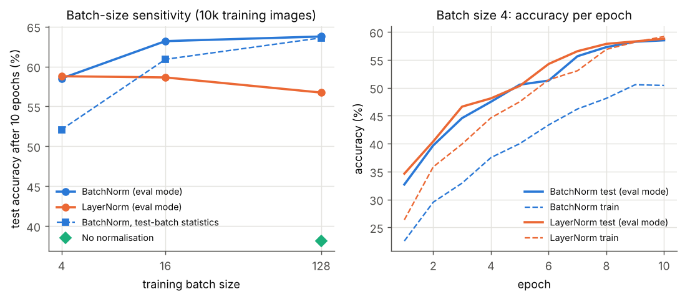

آزمایش ۲ · اندازهی batch
| LayerNorm | BatchNorm | batch |
|---|---|---|
| 56.73 | 63.76 | 128 |
| 58.63 | 63.18 | 16 |
| 58.78 | 58.50 | 4 |
دقت آزمون (٪) پس از 10 اپوک روی 10,000 تصویر آموزشی. BN با batch = 4 حدود 5.3 واحد افت میکند؛ LN افت نمیکند.
بدون نرمالسازی: فقط 38.13%

MobileNetV4 UIB · CIFAR-10